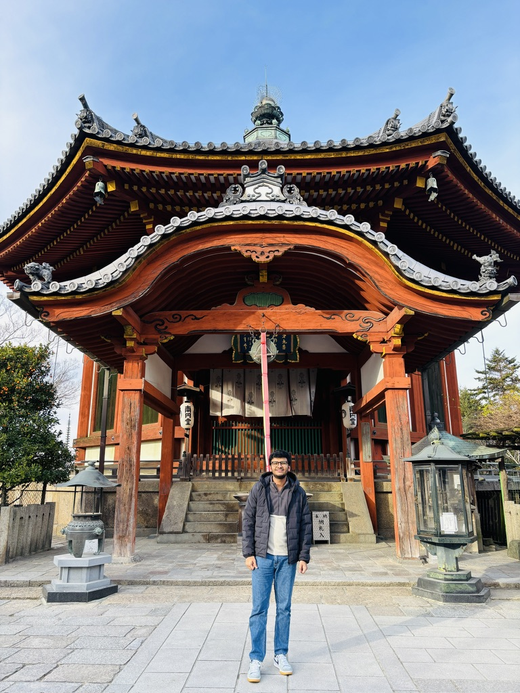
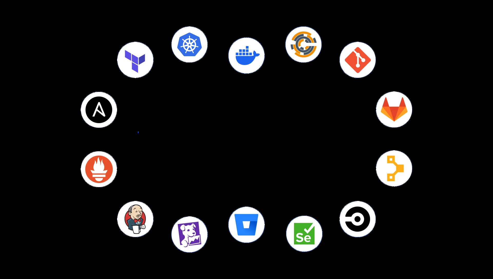

CURRENT ROLE
Cloud Engineer
UD Trucks · TEKsystems
February 2025 – Present
Supporting enterprise AWS environments through cloud security, IAM administration, Datadog monitoring, Terraform automation and cost optimization.
Hello This is Sahil Sharma 👋
AWS Certified Solutions Architect and Terraform Associate with 6+ years of IT experience designing, automating, securing and operating enterprise cloud environments across Japan and India. Specialized in AWS, Terraform, CloudFormation, Datadog, CI/CD automation and Cloud Security.
Let's work together
Cloud Engineer and Solutions Architect supporting enterprise AWS environments in Japan. My work includes IAM and access management, security posture improvement, vulnerability remediation, monitoring, cost optimization and infrastructure automation.

Working with AWS, Terraform, CloudFormation, EC2, VPC, Route53, CloudFront, Lambda, I AM, Linux, Datadog and cloud security solutions.
Open to opportunities in AWS infrastructure, cloud engineering, DevOps automation, monitoring and cloud security.
Contact MeCAREER JOURNEY
CURRENT ROLE
UD Trucks · TEKsystems
February 2025 – Present
Supporting enterprise AWS environments through cloud security, IAM administration, Datadog monitoring, Terraform automation and cost optimization.
Manage AWS accounts and IAM permissions, support Inspector, Security Hub and Trusted Advisor, create Datadog monitors and dashboards, automate monitor management with Terraform and CI/CD, and identify cost-optimization opportunities.
Designed highly available AWS infrastructure across multiple Availability Zones, maintained VPC networking, automated provisioning with CloudFormation, and configured Systems Manager patching and compliance reporting.
Handled AWS incident management, root-cause analysis and troubleshooting, and coordinated technical communication between Japan and India teams.
Analyzed customer requirements, prepared unit test cases, reviewed software quality, maintained project documentation and communicated with Japanese clients.
PERSONAL PROJECTS
Built reusable Terraform modules and CI/CD workflows to manage Datadog monitors consistently across AWS services.
EXPERTISE
CREDENTIALS
Course completed in 2021
CONTACT ME
AWS Cloud Engineer specializing in scalable infrastructure, DevOps automation, cloud security and monitoring solutions.
sahil.t.sharma2@gmail.com
Saitama, Japan 🇯🇵